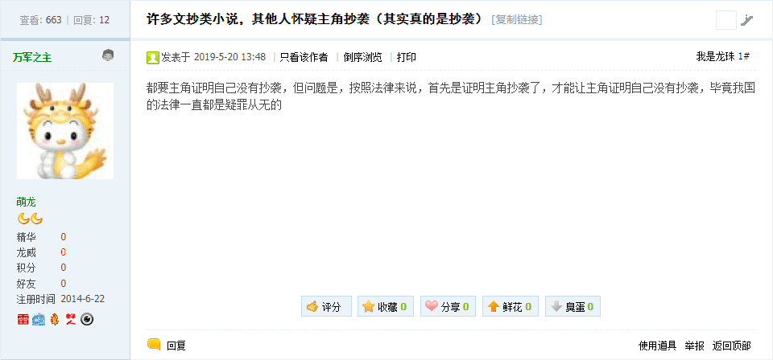

无聊图 4256276
无聊图 4256276
蛋友们，遇到那种喜欢用你东西的同事该怎么办？
打。
这其中蕴涵着充沛的政治和意识形态内容并引领了激烈的政治和意识形态斗争新动向。
简单说，就看之前无聊图转贴的那许多社会新闻，包括但不限于「我寻思着这东西没人要」「我们没文化的人就是这样的」「关系好，它不在我怕浪费就拿来用用」「我们是好朋友，你的就是我的，我的还是我的」，都是「新石器时代」特色传统风俗习惯。
通常在汉语语境当中解读历史的时候，前提至少是「有史以来」，哪怕从唯物主义角度观察也有「游牧」「农耕」「渔猎」这种划分。但是睁眼看世界之后，甚至就从境内犄角旮旯观察，类比南洋群岛、撒哈拉以南非洲、亚马逊河流域之类风水宝地的风土人情，忽然发现还有「采集」这种生产方式。也就是「平时住在地下饿了上树摘个果子吃」或「平时住在树上饿了下地捡个果子吃」这种传统风俗习惯，在当代则与时俱进为「出门捡不着钱就算丢」，这就是「新石器时代」特色。
这个「打」字当中蕴涵着充沛的政治和意识形态内容并引领了激烈的政治和意识形态斗争新动向。
简单说，市面上充沛的野生国师都在谆谆教导人民群众曰「兵者诡道也」「兵不厌诈」，并且安慰人民群众「安啦，豪门贵种走兽派不会在境内大打出手，有事都去中东找场子打代理人战争」。
在这种话语体系当中，除了真正手持管制器械冲锋陷阵的「厮杀汉」之外，其它各行各业的劳动者都是「后勤保障」体系当中的成员。也就是说，所有产业创造的价值，都是「军费」，而「复制并成功」「李鬼变李逵」都可类比为战场上特种兵奇袭据点。
所以，「抄你是看得起你」这种钦定文豪专用台词，若是翻译为娱乐至死の色目逗哔比较熟悉的措辞，就是「この拠点、我がもらい受けようぞ」；而在运用手眼通天的「人脉」按照兲朝特色依法治国原则倒打一耙贼喊捉贼之后，通常钦定文豪会念诵「敵将、我が裁きを下した」并且得意忘形肆无忌惮的到处转贴「有錢是真的能為所欲為的.gif」。
补充
以前提到过，在国际化大都市「华语第一精日论坛」充沛着「三国游戏爱好者」兼「戏服党」，注册了三国人物帐号使用光荣游戏头像，就按照娱乐至死版中二史观插科打诨嬉皮笑脸，日语台词倒背如流。并且「戏服党」还有马甲互相拆台，通常以「名」「字」区分。
曾经看到过其中有个帖子当中熟人互相扒皮，原版「马超」说「马孟起那厮就是“uid13”」，也就是色目钦定文豪马伯庸，然后看见有其它帐号出现说「马伯庸直接用「马抄」不就完了」，被封号（能看见头像变成「塞抹布」状），但帖子还在。
还可以参考之江临安「原创文学论坛」刚出现的应景内容：《许多文抄类小说，其他人怀疑主角抄袭（其实真的是抄袭）》

万军之主兼职钦定文豪
说什么来着？之前一票有良心的青年色目历史学家曰若稽古炒作「儒将」「文武双全」，似乎钦定文豪还能「一将功成万骨枯」「若个书生万户侯」？就是这种话语体系。钦定文豪手眼通兲简在帝心，主席台前三排有「人脉」就能倒打一耙贼喊捉贼，作为「食肉宠物」到处「狩猎」费拉不堪的「食草畜牲」，「一字百元年入四千万」弄来的钱都变军火送到中东「极端组织」手里去了也。
所以我反复强调，「形而上者谓之道」，无论什么乍一看风花雪月的话题都必须上纲上线到「政治和意识形态斗争」当中去。并且还再三提醒「豺狼当道安问狐狸」，说企图以「堂堂之鼓正正之旗」与钦定文豪在其（有主席台前三排「人脉」包庇的）「主场」当中进行啥「决斗」毫无意义，还就得直接瞄着三洲通衢构思战略。
反正境内不是「安啦」得很么，站着说话不腰疼那就打酱油做俯卧撑看热闹不嫌事大唯恐天下不乱嘛，不惜第六次中东战争兼第三次世界大战，否则就是本末倒置。